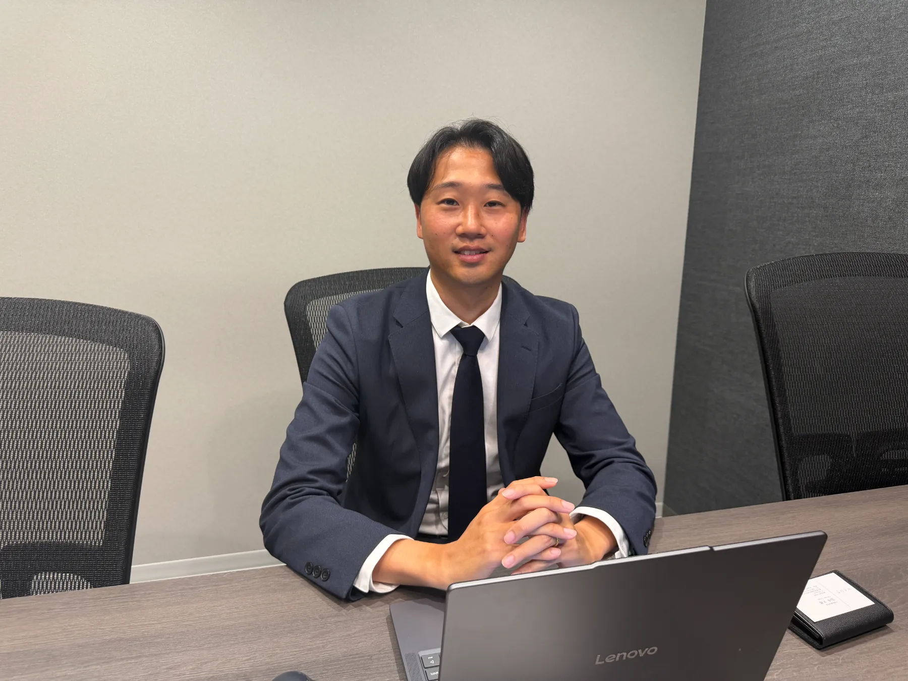
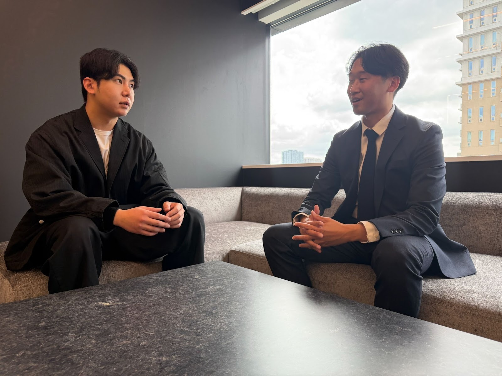

大学卒業後、ITの総合商社に入社し営業職として従事。顧客課題に深く向き合う営業スタイルを強みに、全国1位の営業成績を達成。その後、社内ベンチャーとして人材紹介事業の立ち上げにゼロから参画。急成長中の人材紹介会社「ツナグバ」に転職後は、わずか3ヶ月で事業責任者に昇格。そこで培ったノウハウをもとに、2025年8月に株式会社ReWaveを創業。現在は未経験のジュニア層を中心に、幅広い求職者のキャリア支援に取り組んでいる。
導入前に一番困っていたことは何でしたか？
スモールスタートということもあり、限られたリソースの中で先々の売上を安定的に作っていく必要がありました。日々の業務工数を抑えつつも、求職者の質を担保するという両立が難しく、効率と成果のバランスにずっと悩んでいましたね。
創業当初から人材紹介一本でやっていたので、集客チャネルの確保は死活問題でした。前職時代から他社の送客サービスを複数活用していた経験があったので、立ち上げと同時にいくつかのサービスを比較しながら検討していました。
他社の送客サービスを使っていた中で、新たに探された理由は？
創業時からキミナラさんやROXXさんなど複数の送客サービスを並行して活用していました。ただ正直なところ、当時の成約率は大体15〜18%ぐらいで。もちろん成果は出ていたのですが、もっと費用対効果の合うサービスがないかなと、常にアンテナを張っていたんです。
単純に成約率を上げたいというのが一番の動機でした。費用対効果が合うところを重点的に、テスト的にいろいろ試していたという背景があります。
導入を決めた"決め手"は何でしたか？
SNSを活用した集客方法に強みがあり、これまでとは異なるチャネルからの母集団形成が可能な点に魅力を感じました。特に、今までリーチできていなかった層にアプローチできる点が、自社の成長に繋がると判断して導入を決めています。
実はSNSでの発信を拝見した中で「うちとマッチしているんじゃないか」と感じて、こちらからお問い合わせさせていただいたんです。
導入後の率直なご感想を教えてください
一番驚いたのは、事前情報の質の高さです。他社さんだと求職者情報が3行程度しかないこともザラなのですが、求職者送客の窓口さんの場合は非常に丁寧に整理されていて、面談前の準備が格段にしやすいんです。
おかげで求職者の背景や志向性を理解した上で面談に臨めるので、より質の高いコミュニケーションが実現できています。これは他社サービスとの大きな違いですね。

最初つまずいた点はありますか？
これは本当になくて。もちろん今まで人材紹介をずっとやってきた経験もあるのですが、「ここが困った」というポイントは正直一切なかったですね。スムーズに運用を開始できたと思います。
期待を超えた点があれば教えてください
成約率が30%を超えた点です。これまで他社サービスでは15〜18%だった水準が、導入後に30%を大きく上回る結果になりました。直近では35%近くまで出ている月もあり、想定以上に成果に直結していると感じています。
正直、ここまで数字が上がるとは思っていなかったので、かなりマッチしているなと実感しています。
本サービスをうまく活用するための工夫を教えてください
まず、いただいた事前情報をしっかり読み込んで、求職者の人物像や背景を具体的にイメージすることを意識しています。特に、その方が今抱えているボトルネックと、次に叶えたい理想像をキャッチアップした上で、どんなキャリアに進みたいのかという仮説を立ててから面談に臨むようにしています。
事前準備にかける時間は、慣れた今では5分もかからないぐらいです。最初のころは15〜20分かけていましたが、情報の質が高いので短い時間でも十分にイメージできるんですよね。
あとは、弊社の一番の強みだと思っているのですが、1人の求職者に対して大体10回ぐらい面談を行っています。しっかり理解を深めると同時に、少しでもギャップがないように過去の入社事例も含めて都度コミュニケーションを取るようにしていて。求職者さんからも「こんなにサポートしてくれるのは初めてです」とよく言っていただけるので、そこは一番の差別化になっていると感じています。
サポート体制への率直な感想を教えてください
対応がとにかく迅速です。疑問点や不明点にもすぐ対応いただけるので、安心して利用できるサポート体制だと感じています。送客サービスってどうしても「面談を設定して終わり」になりがちですが、そうではないところに信頼感がありますね。
導入後、改善した数値を教えてください
導入前は成約率が約20%でしたが、導入後は30%以上まで改善しました。現在も安定してこの水準を維持できていて、数字としても明確に成果が出ています。
月間の着座ベースでも20名以上をいただいており、これまでの累計で約50名の求職者をご紹介いただいています。
定性的な変化はありましたか？
面談の質自体が向上しました。事前の段階で求職者への理解度が高まっているので、より本質的な課題や志向性に踏み込んだ提案ができるようになりましたね。
たとえば事務職を希望されている方に対しても、その方のゴールを一緒に考えた上で「営業に行ったらこうなりますよ」という提案ができる。その結果、施工管理や営業職など幅広い職種での決定に繋がっていて、キャリア支援の精度が格段に上がったと感じています。
他社の送客サービスと比べて差があると感じる点
事前情報の質の高さと、求職者の解像度の高さが圧倒的に違います。他社さんだと本当に最低限の情報しかなく、ほぼゼロの状態で面談に入ることも多いのですが、求職者送客の窓口さんの場合はそのギャップが少なく、スムーズに話を進められる。これは使ってみて初めてわかる、大きな強みだと思います。
改善してほしい点や今後期待することはありますか？
現状でも非常に満足度は高いですが、今後さらに求職者の母集団が拡大されて、より多様な層との接点が増えることを期待しています。弊社としても受け入れ体制を拡大していく予定なので、将来的にはもっと多くの送客をお願いできればと考えています。
今後の展望を聞かせてください
今後は組織拡大に伴い、より多くの求職者のキャリア支援に携わっていきたいと考えています。5月以降にプラス3名、8月にもう1名と、採用も進めている最中です。
求職者の目線に合わせて、共感と理解を大切にしながら、理想のゴールと現在地を逆算したコミュニケーションを取る。これが私たちの根幹にあるスタイルです。事業としても安定的かつ継続的な成長を実現しながら、より価値の高いサービスを提供できる体制を構築していきたいと考えています。
求職者送客の窓口さんとは、引き続き長くお付き合いさせていただきたいですし、一緒に成長していければ嬉しいですね。